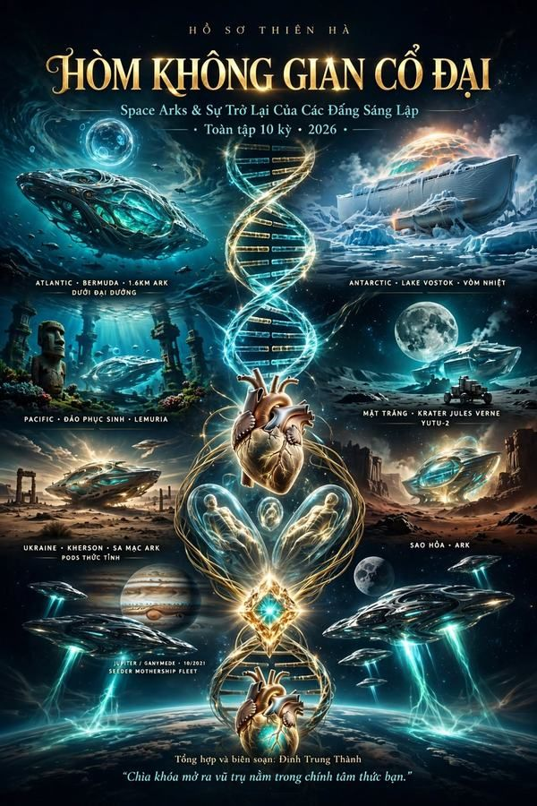
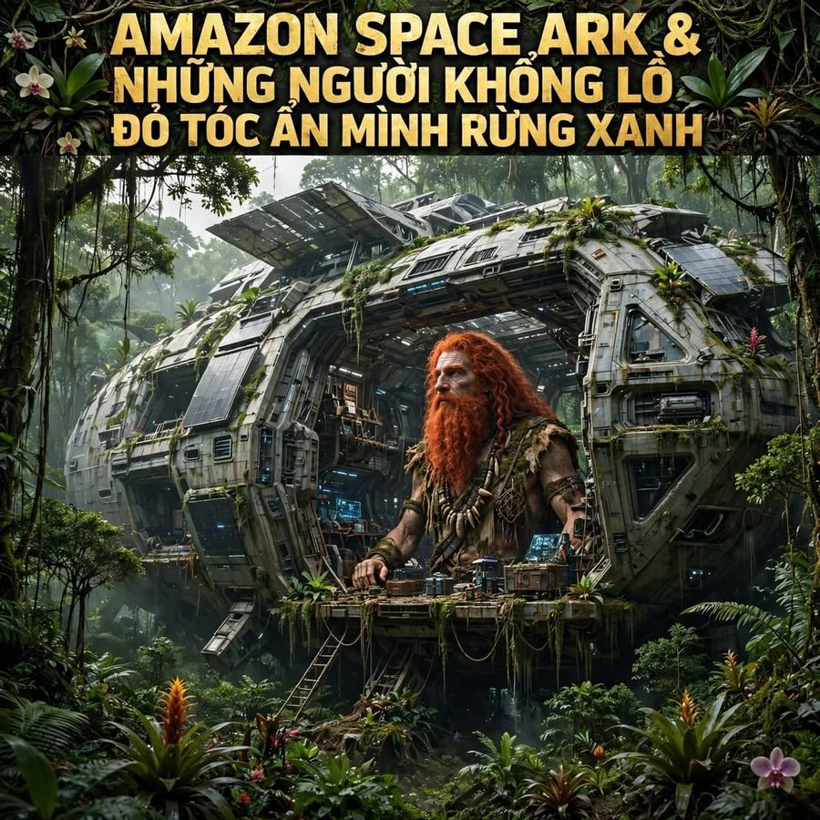
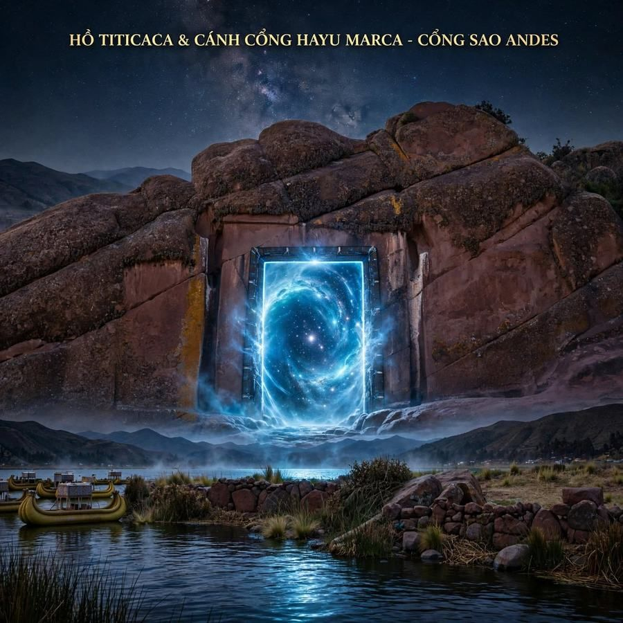
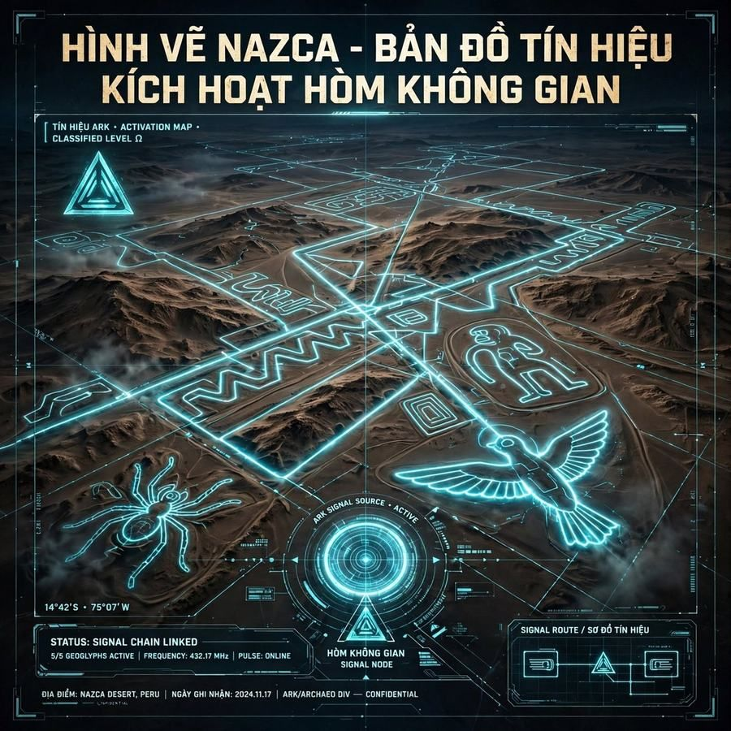
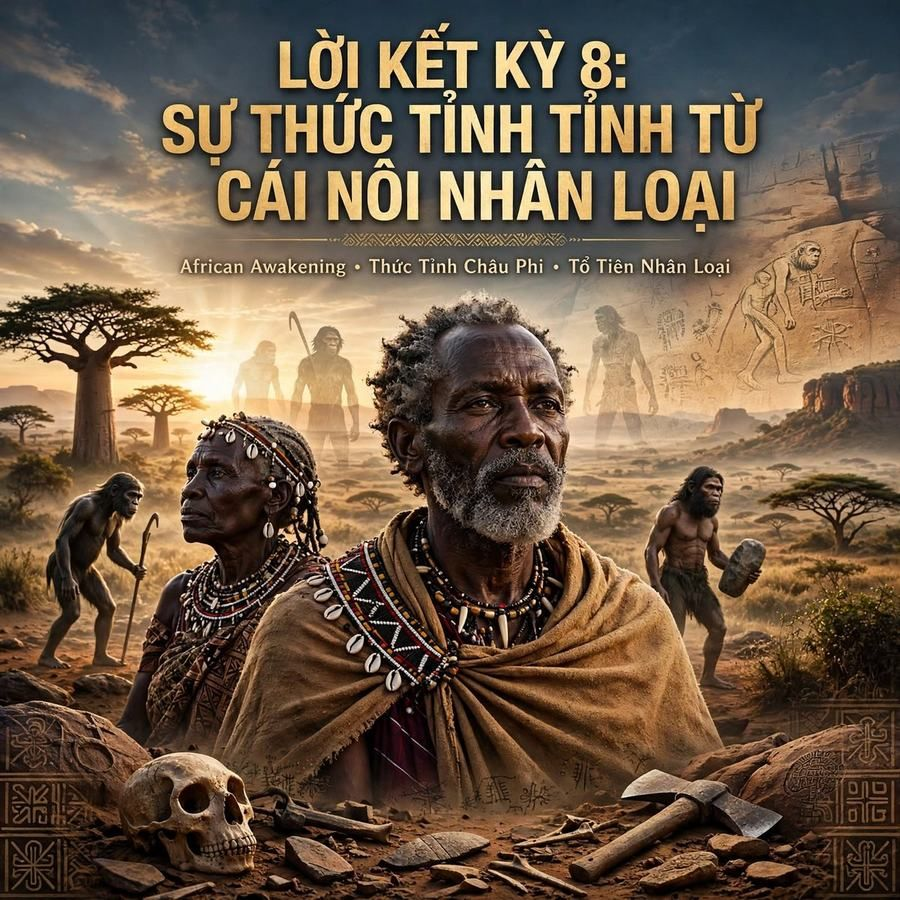

Trang chủ / Chuyên đề 6: Hòm Không Gian Cổ Đại / Kỳ 58
Chuyên đề 6 · Kỳ 58 / 100
CUỘC ĐUA GIÀNH GIẶT CÔNG NGHỆ SPACE ARK GIỮA LIÊN MINH TRÁI ĐẤT & BỘ MÁY DEEP STATE

Ở Kỳ 7, chúng ta đã cùng nhau vạch trần bức màn địa chính trị vũ trụ tại miền Nam Ukraine, giải mã lý do thực sự đằng sau việc phong tỏa sa mạc Oleshky Sands tại Kherson để bảo vệ chiếc Hòm Không Gian cổ đại hình bầu dục và cơ chế tự ngắt kết nối năng lượng bảo vệ tàu khi bị xâm nhập thô ráp. Hôm nay, chuyến du hành giải mã di sản khởi nguyên sẽ đưa chúng ta đến với trận chiến sinh tử diễn ra âm thầm nhưng vô cùng tàn khốc trên bàn cờ quyền lực địa cầu: Cuộc Đua Giành Giật Công Nghệ Space Ark Giữa Lực Lượng Liên Minh Trái Đất (Earth Alliance) & Bộ Máy Kiểm Soát Bóng Tối (Deep State / Cabal)! Tại sao các chiếc Hòm Không Gian cổ đại lại trở thành "giải thưởng tối cao" mà cả phe Ánh Sáng lẫn phe bóng tối đều dốc toàn lực tranh chấp? Kho tàng công nghệ Năng lượng Điểm Không, Cổng Sao (Stargates) và y học tái tạo DNA bên trong các Hòm Không Gian có khả năng làm sụp đổ ma trận kiểm soát tài chính - năng lượng 3D ra sao? Sự thật về các chiến dịch đen (Black Ops) nhằm thâu tóm các bộ phận tinh thể cổ đại — bao gồm âm mưu cướp phá cổ vật và tạo ra các chiến dịch tâm lý "di tản cờ giả" (False-Flag Evacuation Psyops) — bị phơi bày ra sao? Sự phối hợp quân sự giữa lực lượng Mũ Trắng (Earth Alliance) và Liên Đoàn Thế Giới Thiên Hà (GFW) để niêm phong, bảo vệ mạng lưới Arks toàn cầu diễn ra thế nào? Và tại sao mọi tham vọng chiếm đoạt công nghệ của phe bóng tối đều phải nếm mùi thất bại thảm hại trước Luật Vũ Trụ và Tần Số Trái Tim Từ Bi?
1. TẠI SAO SPACE ARKS LÀ "GIẢI THƯỞNG TỐI CAO" TRÊN BÀN CỜ ĐỊA CHÍNH TRỊ VŨ TRỤ?
Việc mạng lưới Hòm Không Gian toàn cầu thức tỉnh tỏa nhiệt từ cuối năm 2021 đã làm đảo lộn hoàn toàn mọi tính toán của các thế lực quyền lực trên Trái Đất. A. Kho Tàng Công Nghệ Siêu Chiều Vượt Trội Hàng Triệu Năm
- Giải Phóng Khỏi Năng LƯỢNG Hóa Thạch: Mỗi Hòm Không Gian chứa đựng bộ máy phát năng lượng vô hướng lượng tử, có khả năng cung cấp nguồn năng lượng miễn phí không giới hạn cho toàn bộ hành tinh mà không cần đến dầu mỏ, than đá hay hạt nhân.
- Ma Trận Y Học Lượng Tử & Cổng Dịch Chuyển: Các buồng ngủ đông tinh thể, công nghệ đảo ngược lão hóa di truyền và hệ thống Cổng Sao (Stargates) tích hợp trên tàu cho phép dịch chuyển tức thời xuyên các hệ sao, làm vô hiệu hóa hoàn toàn mọi rào chắn địa lý. B. Mất Công Nghệ Là Mất Vĩnh Viễn Ma Trận Kiểm Soát 3D
- Nỗi Sợ Hãi Của Giới Tinh Hoa Bóng Tối: Trong hàng trăm năm, bộ máy Deep State duy trì quyền lực bằng việc độc quyền năng lượng, kiểm soát tài chính và thao túng y học. Việc công nghệ Space Arks được giải mật đồng nghĩa với việc toàn bộ ma trận nô dịch 3D sẽ sụp đổ ngay lập tức! 2. MẢNG TỐI CỦA PHE BÓNG TỐI: TỪ CƯỚP ĐÁT CỔ VẬT ĐẾN TÂM LÝ CHIẾN "CỜ GIẢ" Trước nguy cơ tan rã vĩnh viễn, bộ máy kiểm soát bóng tối đã triển khai hàng loạt chiến dịch ráo riết nhằm thâu tóm hoặc phá hoại di sản của Các Đấng Sáng Lập. A. Âm Mưu Chiếm Đoạt Cổ Vật Tinh Thể (Viên Ngọc Kích Hoạt)
- Các Chiến Dịch Trộm Cổ Vật Ngầm: Nhận thấy không thể vận hành được toàn bộ con tàu nếu thiếu tần số tâm thức tương hợp, phe bóng tối đã cử các nhóm đặc nhiệm ngầm tìm cách tháo gỡ các linh kiện nòng cốt — điển hình là việc chiết xuất Viên Ngọc Kích Hoạt (Activation Jewel) từ Hòm Đại Tây Dương để nghiên cứu riêng tại các căn cứ đen.
- Cơ Chế Phản Ứng Của Tàu & Sự Can Thiệp Của Phe Bắc Âu: Việc tháo gỡ trái phép này đã làm xáo trộn từ trường khu vực Bermuda, buộc lực lượng Liên minh Mũ Trắng phối hợp với các sĩ quan ngoài hành tinh Bắc Âu (Nordic ETs) phải tiến hành chiến dịch đặc biệt để hoàn trả lại viên ngọc về vị trí cũ, giúp tái thiết lập lá chắn từ trường an toàn. B. Chiến Dịch Tâm Lý Chiến "Con Tàu Bẫy Jerusalem" (False-Flag Psyops)
- Tạo Ra Kịch Bản Sơ Tán Giả: Để làm nhiễu loạn thông tin và gieo rắc sự sợ hãi, truyền thông bóng tối đã dựng lên các câu chuyện giả mạo về "con tàu cứu rỗi Jerusalem" hay các thảm họa tận thế fake, lừa gạt quần chúng rằng họ cần phải bước lên các phi thuyền sơ tán để thoát khỏi Trái Đất.
- Vạch Trần Sự Lừa Dối: Mục tiêu thực sự của kịch bản này là đánh lừa niềm tin của cộng đồng, che giấu vị trí thực sự của các Hòm Không Gian chân chính đang nằm bảo vệTrái Đất và đưa nhân loại vào ma trận sợ hãi mới.

3. CHIẾN LƯỢC PHÒNG THỦ CỦA LIÊN MINH TRÁI ĐẤT (EARTH ALLIANCE) & GFW
Đứng trước sự dòm ngó tiêu cực, Lực lượng Liên minh Trái Đất (bao gồm các sĩ quan Mũ Trắng trong quân đội Mỹ, Nga, Trung Quốc và các quốc gia hòa bình) đã phối hợp chặt chẽ với Liên Đoàn Thế Giới Thiên Hà (GFW). A. Phong Tỏa & An Ninh Nghiêm Ngặt Tại Các Vị Trí Space Arks
- Thiết Lập Vành Đai Bảo Vệ Đa Lớp: Toàn bộ các khu vực cất giữ Hòm Không Gian — từ Đại Tây Dương, Hồ Vostok (Nam Cực), sa mạc Kherson (Ukraine), Đảo Phục Sinh cho đến Mặt Trăng và Sao Hỏa — đều được đặt dưới sự giám sát và bảo vệ nghiêm ngặt của lực lượng Liên minh.
- Vô Hiệu Hóa Mọi Phương Thức Tấn Công: Các hạm đội không gian Solar Warden và US Space Force cùng phi thuyền GFW đã thiết lập lá chắn tần số xung quanh các địa điểm, đánh chặn mọi nguy cơ can thiệp bằng vũ lực hay vũ khí hạt nhân từ phe tiêu cực. B. Sử Dụng Nhân Sự Mang Mã Gen Kích Hoạt Bẩm Sinh
- Bảo Đảm Sứ Mệnh Thám Hiểm An Toàn: Liên minh Trái Đất sử dụng các quân nhân và nhà khảo cổ mang dải tần số tương hợp di truyền bẩm sinh (như nhân chứng JP của Lục quân Mỹ) để tiến vào bên dalam tàu. Sự hiện diện của họ giúp kích hoạt các chức năng hòa bình, ghi chép tri thức và đưa thông tin giải mật ra ánh sáng một cách an toàn.

4. QUY TẮC BẤT KHẢ XÂM PHẠM CỦA VŨ TRỤ & SỰ SỤP ĐỔ HOÀN TOÀN CỦA CABAL
Cuộc đua giành giật công nghệ Space Ark đã đi đến hồi kết với sự khẳng định tuyệt đối của Luật Vũ Trụ. A. Tàu Không Phản Ứng Với Tham Vọng Tiêu Cực
- Cơ Chế Tự Vệ Lượng Tử Tuyệt Đối: Mọi nỗ lực chiếm đoạt công nghệ Hòm Không Gian bằng tiền bạc, quyền lực hay vũ lực thô ráp của giới tinh hoa bóng tối đều bế tắc. Trường từ trường tinh thể của tàu tự động đẩy lùi và khóa chặt mọi lối vào đối với những sinh mệnh mang tần số tham lam và kiểm soát. B. Chuyển Giao Quyền Quản Lý Cho Kỷ Nguyên Mới
- Chiến Thắng Của Ánh Sáng & Sự Thức Tỉnh: Việc Cabal hoàn toàn bị tước quyền tiếp cận Hòm Không Gian là đòn đánh quyết định làm suy sụp tinh thần của bộ máy kiểm soát ngầm. Toàn bộ di sản Hòm Không Gian đã được chính thức trao trả cho Liên Minh Ánh Sáng và cộng đồng nhân loại tự do!

5. LỜI KẾT KỲ 8: CHÍNH NGHĨA VÀ BÌNH MINH CỦA TỰ DO
Kỳ 8 của chuyên đề 6 khép lại mang đến chiến thắng bừng sáng trên bàn cờ exopolitics:
- Bóng Tối Không Thể Chiếm Đoạt Chân Lý: Cuộc đua giành giật công nghệ Space Ark đã chứng minh rằng: Mọi công nghệ tối cao của Đa Vũ trụ chỉ phục vụ cho Tình Yêu Thương, Hòa Bình và Sự Thăng Hoa Tâm Thức!
- Sẵn Sàng Cho Sự Trở Lại Của Các Đấng Sáng Lập: Sự thất bại của phe bóng tối đã dọn sạch con đường, chuẩn bị cho thời khắc lịch sử khi các Cổng Sao Ark mở ra đón chào sự hiện diện công khai của các thế lực bảo hộ vũ trụ!
